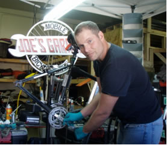

Bike Rentals
Adult rentals - ages 13 and up
- 0-2 Hours, $30
- 2-4 Hours, $40
- 4 Hours+ / Full Day, $60
Kids' rentals - up to 12 years old, any bike or trail-a-bike
- 0-2 Hours, $20
- 2-4 Hours, $25
- 4 Hours+ / Full Day, $30
See Rentals page for details.
Maintenance and Repairs
Text me at 403-874-5637 to reserve a spot.
Above prices are for commonly requested work. Just ask for a price for anything else.
Joe's Garage also makes "corporate house calls" - ask for details.
Tune-up Package Prices
Parts and some labour are extra. Joe will give you an estimate and call if extras are required.
Depending on your requirements and the condition of your bike, the price may vary.
Level 1 - "Make It Safe" - $90
- Pump tires
- Oil chain
- Tighten every nut, bolt and quick release that requires adjustment
- Adjust brakes, gears, hubs and headset for safety and adequate function
- True wheels for brake clearance
- Inspect entire bicycle for damage or wear that would compromise safety and test ride
- Parts installation extra
Level 2 - "Make It Work" - $150
- All Level 1 procedures plus
- Check and adjust torque on all external fittings
- Fine tune gears and brakes
- For disc brakes, true rotors to the extent possible
- Lube derailleurs and brakes where needed
- Decontaminate brake pads where possible
- Trim compacted derailleur housing
- Adjust headset, bottom bracket and hubs
- Tighten cassette
- Laterally and radially true wheels in truing stand with tires mounted
- Tension spokes
- Cap all cables, valves and housing
- Clean rims with steel wool if necessary
- No additional labor charge for installation of parts
Level 3 - "Make It Nice" - $225
- All Level 1 and 2 procedures plus
- Lubricate cables where necessary
- Inject grease into hubs and lower headset cup where needed
- True, tension and dish wheels with tires removed
- Clean frame, fork and wheels
- Remove and clean cassette and chain rings
- Remove, clean and lube rear derailleur pulleys
- Align rear derailleur hanger if necessary
- Remove cartridge bottom bracket and lube threads where appropriate
- Additional procedures discounted 50%
- Improve set-up where practical (Make it nice!)
 |
 Prices
Prices